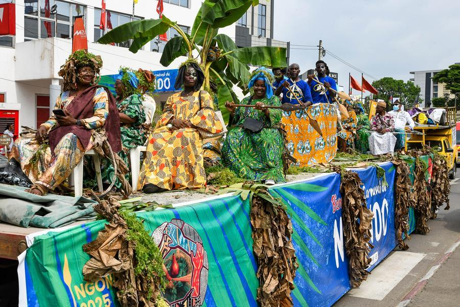
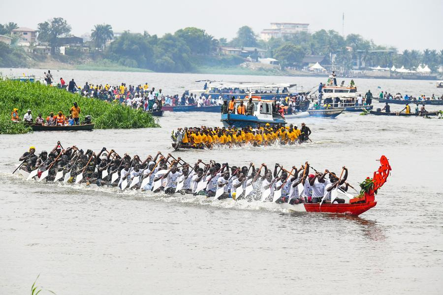

Caravane 2026

Diplomatie culturelle
Tradition et vivre-ensemble : le NGONDO reçoit le Chef Supérieur du Canton Nkokoé
24 juin 2026 · Palais de la Culture Sawa · Lire l'article

NGONDO 2026
Programme officiel : apothéose sur les berges du Wouri le 6 décembre 2026
Décembre 2026 · Douala, Cameroun ·